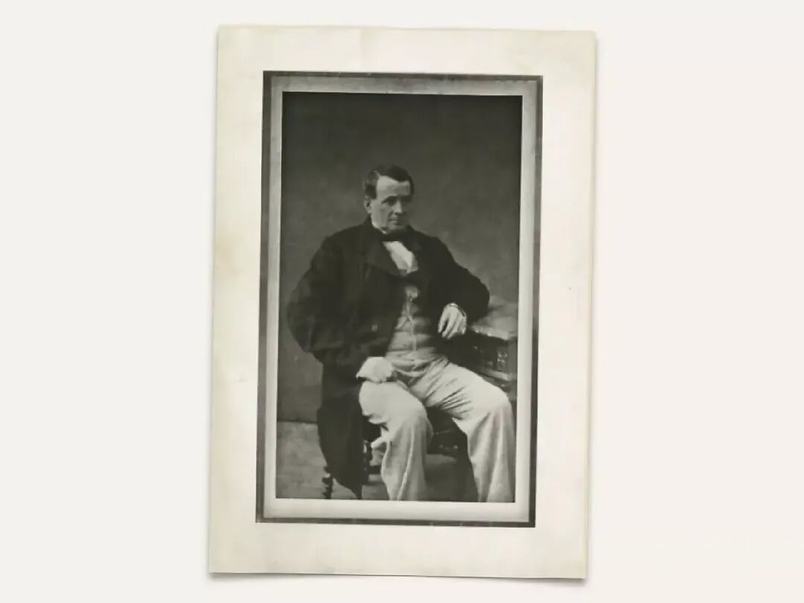

爱马仕189年的马具哲学：Harness 的设计要跟被约束者对齐
来源：微信公众号 归档日期：2026-04-07 抓取状态：成功 原文字符：2897｜配图：2 张
摘要速览
用爱马仕189年的马具制造哲学，提供理解 Harness Engineering（驾驭工程）的直觉性类比框架。不讲技术细节，讲底层设计哲学。
核心内容
- 第一个客户是马：Harness 的设计要跟被约束者对齐（alignment）。好的 Harness 让被约束者感觉不到约束的存在，同时确保力量的方向始终正确。马具不舒服，马就会抵抗，抵抗就会出事故。
- 轻量与耐久的矛盾：蒂埃里用鞍针缝法解决——两根针两根蜡线从相反方向穿过皮革，张力对称分布，一根线断了另一根还能撑住。这是最早的容错机制（fault tolerance）。
- 品控三层护栏：工匠自检 → 质量团队复查 → 创意总监签字。不合格不打折，直接销毁。内部把"看上去精致但结构有隐患"的缺陷叫"幻觉"（hallucination）——评估者靠检查清单而非直觉来验收。
- 配货制度 = 渐进式披露（progressive disclosure）：不一次性把所有好东西摆出来，分层释放逐步深入。先丝巾工艺 → 再皮具材质 → 最后核心产品。确保客户获得核心产品时已具备充分上下文。把所有信息一次性塞给人，反而什么都记不住。
- 为剔除而构建（build to delete）：每一代继承人都砍掉上一代觉得很"聪明"的产品线。1920年代汽车替代马车，砍掉80%产品线，保留核心工艺迁移到新品类。砍掉的是产品，保留的是方法论。
- 可溯源的轨迹数据：每件产品都有"身份证"——工匠编号、年份、皮料批次全部可追溯。Harness 的竞争优势不在 Harness 本身，在于运行过程中捕获的轨迹数据（trace data）。
- 材料越好，对工艺要求越高：最顶级的皮料对温度、湿度、工具、手法都有更严格的控制要求。普通皮料容忍瑕疵，顶级皮料不行。类比：模型越强，对 Harness 的要求越高。
可执行启发
（待补充）
我的想法
（待补充）思考方向：
- "配货制度 = 渐进式披露"太妙了——自己的知识库 Agent 在给用户返回信息时，是不是也应该分层释放而非一次性倾倒？
- "为剔除而构建"——自己的 Agent 体系是不是也该定期砍掉不再有效的部分，保留核心方法论迁移到新场景？
为什么有用
- 把 Harness Engineering 的抽象概念翻译成了极其直觉的类比——alignment、fault tolerance、guardrails、hallucination、progressive disclosure、build to delete、trace data，每个 AI 术语都在爱马仕身上找到了189年的实践验证
- 和阿里云那篇技术向的驾驭工程文章形成完美互补：一个讲技术案例，一个讲设计哲学
- "第一个客户是马"这个洞察对设计任何约束系统都有启发
适用 / 不适用场景
- 适用：理解 Harness Engineering 的设计哲学、Agent 架构设计的底层思维、品控体系设计、做内容时需要类比框架
- 不适用：需要具体技术实现方案（这篇是哲学层面，不是操作指南）
原文沉淀
目录
ESSAY
1837 年，蒂埃里·爱马仕在巴黎开了一家马具工坊
那时候马是主要交通工具，贵族出行全靠马车。蒂埃里观察到一个问题：巴黎市面上的马具质量参差不齐，很多马在运输途中因为不合身的挽具而动作受限。马具（Harness）的核心功能是约束和引导，让马的力量朝正确的方向释放，同时保护马本身不受伤害
他的解决方案很朴素：做最好的 Harness
对此 OpenAI 也表示，设计 Harness，是未来最核心的工作

蒂埃里·爱马仕（1801-1878），从德国克雷费尔德来到巴黎的马具匠
第一个客户是马
爱马仕早期有一条产品哲学，流传了六代人：
「我们的第一个客户是马」
Harness 的设计要跟被约束者对齐（alignment）。马具不舒服，马就会抵抗，抵抗就会出事故。好的 Harness 让被约束者感觉不到约束的存在，同时确保力量的方向始终正确
蒂埃里在 1867 年世博会上拿到了一等奖。评委给出的评价集中在两个词：轻量和耐久。在当时的马具行业，这两个词是矛盾的。越结实的马具通常越重，越重马就越累
蒂埃里用鞍针缝法（saddle stitch）解决了这个矛盾。两根针、两根蜡线，从相反方向同时穿过皮革，张力对称分布。一根线断了，另一根还能撑住。这大概是最早的容错机制（fault tolerance）
到 1914 年，工坊有 70 到 80 名专业马具工匠。每个工匠从头到尾负责一件产品。出了问题，能追溯到人
品控
爱马仕的品控哲学可以用一句话概括：
不合格的，不打折。销毁
今天的爱马仕，每件产品在出工坊之前都要经过创意总监的签字确认。一个人，过所有的东西。整套品控分三层：工匠自检、质量团队复查、最终负责人签字。三层护栏（guardrails）都通过才能出厂
任何一层不通过，产品回到工匠手中返工
返工还是不合格？销毁
有一种常见的质量问题，内部叫「幻觉」（hallucination）：产品看上去很精致，拿在手里也挑不出明显毛病，但用了一段时间才发现结构上有隐患。这种缺陷最难被发现，因为评估者本身也会被外观迷惑。爱马仕的做法是让评估者带着一套明确的检查清单去验收，不靠直觉，靠流程
成本很高。但爱马仕从来没有因为成本高而降低标准。2024 年，爱马仕营收 152 亿 欧元，净利润 46 亿 欧元。护栏的严格和商业的成功，在这家公司身上从来不矛盾
配货
想买一只铂金包？有钱也未必买得到
爱马仕有一套「配货」制度。你需要先在店里购买一定金额的其他商品，围巾、餐具、香水、皮带，积累了足够的消费记录和客户关系之后，销售顾问才会「让你看到」那只包
想要什么不是你说了算。系统会在它认为你准备好的时候，才让你看到
所有好东西不会一次性摆在你面前。分层释放，逐步深入（progressive disclosure）。你先了解丝巾的工艺，再了解皮具的材质，最后才进入核心产品。每一步都是在扩充你对整个体系的上下文（context）
配货制度经常被吐槽。但从品牌管理的角度看，它解决了一个核心问题：确保客户在获得核心产品时，已经具备了对整个体系的充分上下文。把所有信息一次性塞给人，反而什么都记不住
爱马仕 Birkin 包
克制
爱马仕的产品线一直很克制
14 个品类，每个品类的 SKU 数量远低于同级别竞品。不追求产品数量，不做联名潮流款，不追热点。经典款可能几十年不变
1920 年代，汽车开始替代马车，马具需求急剧下滑。第三代继承人 Émile-Maurice 没有试图做更多种类的马具来挽救销量。他砍掉了马具产品线中不再有需求的部分，把核心工艺能力迁移到皮具和旅行箱上
砍掉了 80% 的产品线之后，效率反而上去了
关键在于，他砍掉的是产品，保留的是工艺。鞍针缝法还是那个鞍针缝法，皮料处理还是那套皮料处理。变的是承载物，不变的是方法论
每一代爱马仕的继承人，几乎都做过类似的事情：砍掉上一代人觉得很「聪明」的产品线，用更少的品类做出更好的结果。为剔除而构建（build to delete），这件事在 189 年里反复发生
可溯源
爱马仕的每件产品都有自己的「身份证」
工匠编号、年份标记、皮料批次，全部可追溯。一只包用了十年拿回去维修，工坊能查到当年是哪位工匠制作的，用的什么皮料，每一步的工艺记录都在
每一件产品都带着它完整的履历
这套溯源系统的真正价值，在产品出问题的时候才显现。修复一只包不需要猜测它是怎么做的，所有的过程数据都被结构化地记录下来了。问题出在哪一步，一目了然
Harness 的竞争优势从来不在 Harness 本身，在于 Harness 运行过程中捕获的轨迹数据（trace data）。爱马仕 189 年来积累的工艺记录、返修数据、材料测试报告，本身就是一座矿
马的时代结束了
1919 年，汽车全面替代马车。爱马仕的另一位继承人 Adolphe 认为公司前途有限，选择退出。Émile-Maurice 买下了哥哥的股份，开始转型
从马具到皮具，从皮具到丝巾，从丝巾到香水，再到餐具、珠宝、腕表。今天的爱马仕有 14 个品类，全球超过 300 家门店，25000 名员工，其中 7000 名工匠
品类一直在变。但有几样东西从 1837 年到今天没变过：手工制作、极致品控、克制的产品线、从被约束者的体验出发做设计
马的时代结束了，马具的哲学还在
还有一个反直觉的事实
爱马仕的皮料越好，对工匠的要求越高。最顶级的喜马拉雅鳄鱼皮，对工坊的温度、湿度、工具、手法都有更严格的控制要求。普通皮料可以容忍一些工艺上的瑕疵，顶级皮料不行
材料越好，对工艺的要求越高，对工作环境的控制越严格
189 年过去了，爱马仕依然是全球最成功的 Harness 公司
也许是唯一一家把 Harness 做成奢侈品的公司
归属：[[02-输入/按主题/认知与思维/_index|认知与思维]]